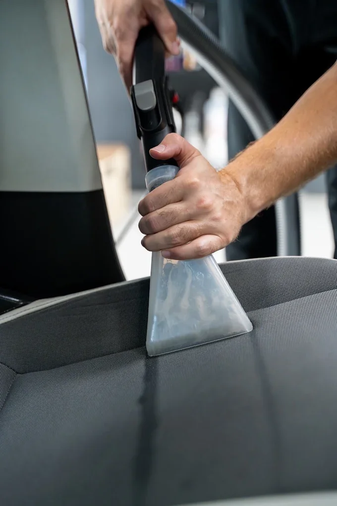
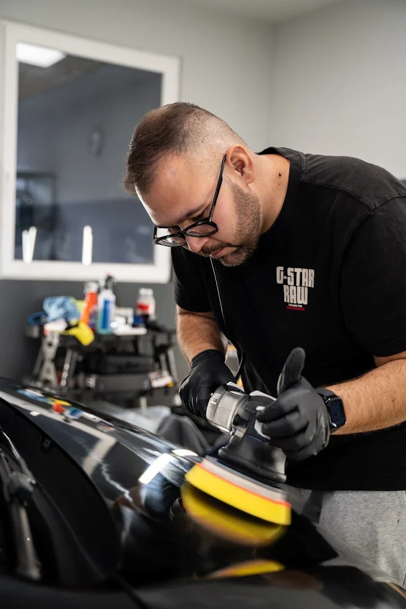
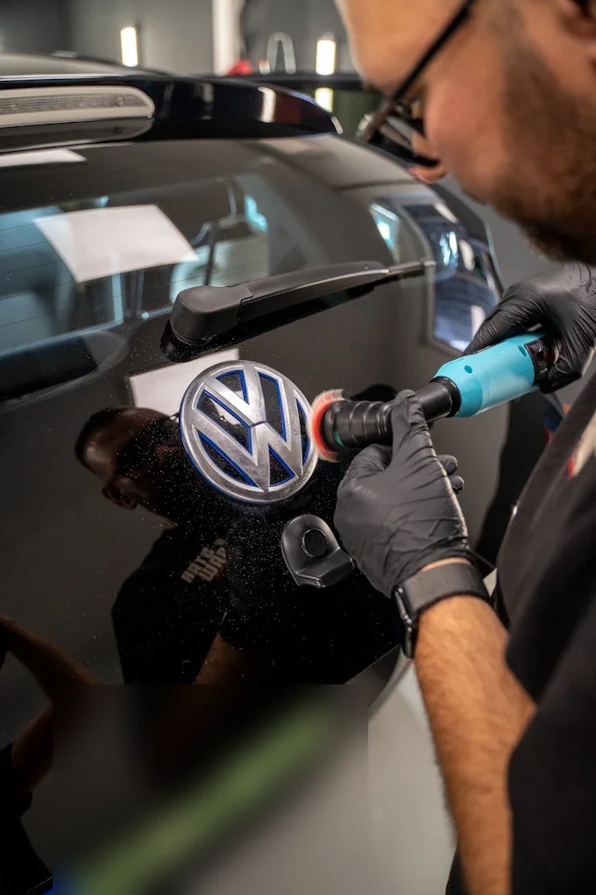

Szolgáltatások
Mosás, polírozás, kerámia bevonat
Hét munka, mind a zárt műhelyben, előre egyeztetett napon. Egy belső takarítás 2–3 óra, egy polírozás egy teljes nap.
- Takarítás
- Kívül és belül
- Polírozás
- Egy- és többlépcsős
- Védelem
- Kerámia bevonat
- Időtartam
- 1 órától 2 napig
Takarítás
Kívül és belül. Mosástól a kárpit mélytisztításáig.
Kézi mosással kezdünk, mert a gépi kefe karcolja a fényezést. Bent a kárpitot, a szőnyeget és a bőrt külön kezeljük.
- Külső kézi mosásAktív hab, kétvödrös mosás, felni, szárítás7 900 Ft-tól
- Külső-belső takarításPorszívózás, műszerfal, ajtókárpitok, üvegek14 900 Ft-tól
- KárpittisztításÜlések, szőnyegek, csomagtér gépi mélytisztítása24 900 Ft-tól
- BőrápolásTisztítás és táplálás, hogy ne repedezzen19 900 Ft-tól

Polírozás
Karcok és hologramok ki. Gépi polír, oldalfényben ellenőrizve.
A fényezés állapotától függően egy- vagy többlépcsős polírozást javaslunk. Átvételkor megmutatjuk, mi jön ki és mi marad.
- Fényszóró-polírozásSárgult, matt búra csiszolása, UV-védő réteggel12 900 Ft-tól
- Egylépcsős polírozásMosókarcok és hologramok, frissebb fényezésre49 900 Ft-tól
- Többlépcsős polírozásMélyebb karcok csiszolással és két polírlépcsővel89 900 Ft-tól

Védelem
Kerámia bevonat. A polírozott fényezés védelme évekig.
Polírozás után kerámia réteget viszünk fel. A víz lepereg róla, a kosz nehezebben tapad, és a mosás is gyorsabb.
- Kerámia bevonatPolírozással együtt, két nap a műhelyben149 900 Ft-tól
- Felni kerámiaLeszerelt kerekeken, a fékpor ellen39 900 Ft-tól
